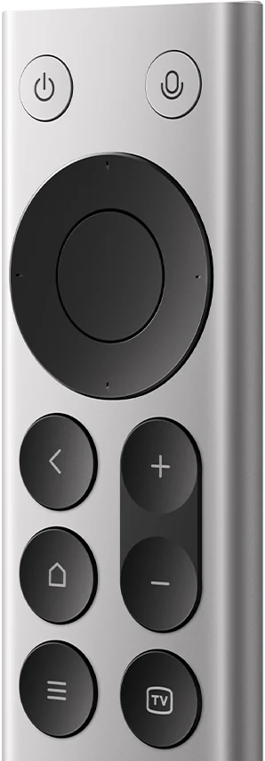
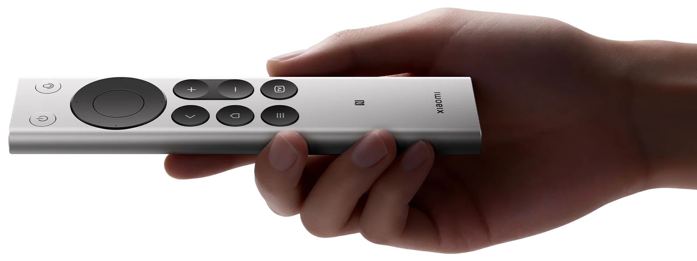
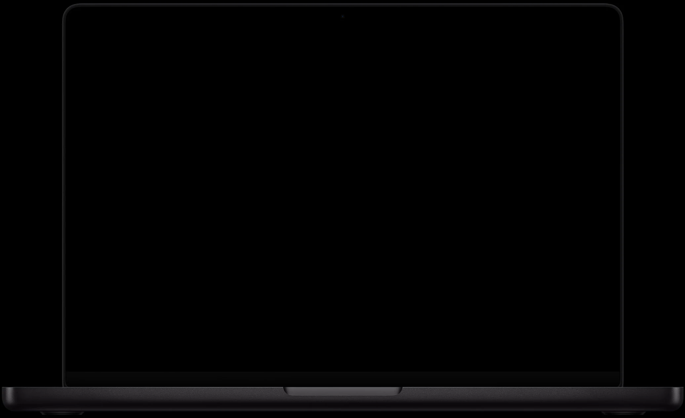
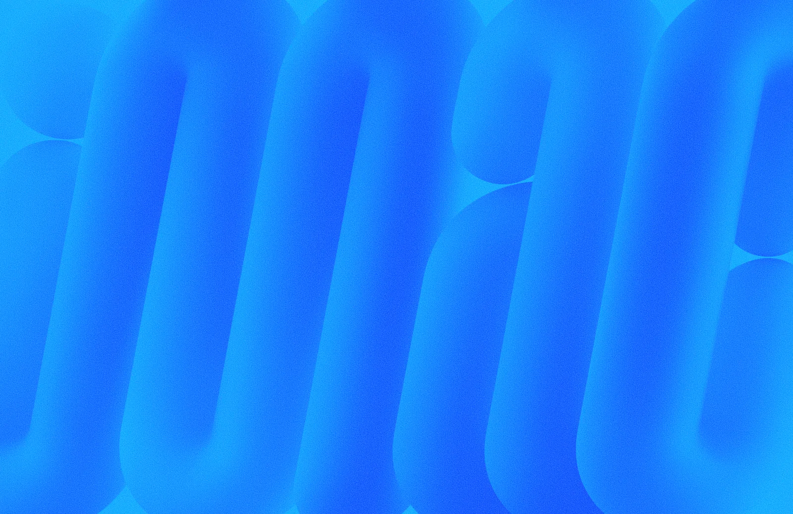

适配小米蓝牙遥控器 2 Pro · macOS 14+
你的 Mac，
多了一个遥控器。
窝在沙发上说一句口令，或者按一个键——打开应用、切歌、写备忘、呼出灵动岛，一整串动作自动完成。

- 动作类型
- 13种
- 按键手势
- 4种
- 语音识别
- 本机完成
- 系统要求
- macOS14+
按键
每一个键，
都由你来定义。
单击、双击、长按、按住同步，同一个键在不同应用里可以做完全不同的事。

- 语音键说出口令，设备端识别
- 电源键锁屏、唤醒或解锁
- 方向键操作灵动岛与菜单
- 音量键调音量，也能调亮度
- 主页键回桌面，呼出浮动菜单
上手
三步，就能用起来。
-
01
连上遥控器
蓝牙配对小米遥控器 2 Pro（RC003），按提示授权输入监控和语音识别。
-
02
编排动作
选一个按键或一句口令当触发器，再给它排一条动作链，顺序由你定。
-
03
按下，或说出口
动作链在 Mac 上一步步执行。改了配置，随时点「运行测试」验证。
动作编排
触发器 + 动作链，
就这么简单。
工作空间、事件列表、动作链与参数检查器四栏排布，结构清晰、配置直观。点击任意触发器，即可浏览完整编排视图。
用遥控器编排你的 macOS 操作
触发器
全局
动作序列
配置
基础设置
遥控器按键
语音指令
动作目录
13 种动作，
覆盖日常所需。
从打开应用到解锁屏幕，自由组合成你自己的工作流。
旧版兼容动作「唤醒屏幕以解锁」仍可在已有流程中运行，当前动作菜单已移除这个独立入口。
灵动岛
从刘海自然展开，
手不离遥控器。
按下主页键，浮动菜单从 Mac 顶部刘海自然展开。用方向键切歌、调亮度，搭配 Kivo 还能查看追剧更新、接着看上次没看完的那一集。
了解 Kivo 获取 Kivo 卡片


亮度 54% · 按 ＋ / − 键实时调节屏幕亮度
隐私
你说的每一句，
只留在你的 Mac 上。
声音由遥控器采集，经蓝牙送到 Mac，在设备端完成识别。不用 Mac 的麦克风，不经过任何服务器。
- 遥控器采集按住语音键说话
- Mac 本机识别设备端语音识别
- 云端服务器从不上传
常见问题
还有疑问？
设备、权限、语音，一次说清。
我需要准备什么？
一台升级到 macOS 14 或更高版本的 Mac，和一支小米蓝牙遥控器 2 Pro（RC003）。没了。
装完要开哪些权限？
蓝牙用来连遥控器，输入监控用来听按键，语音识别用来听懂口令，辅助功能用来发快捷键和聚焦控件。安装时 RemoteFlow 会一步步带你开。
语音会用 Mac 的麦克风吗？
不会。声音在遥控器上采集，通过蓝牙送到 Mac，在本机完成识别，不经过任何服务器。
别人说话会误触发吗？
把触发短语设得具体一些（比如「打开工作备忘录」而不是「打开」），误触发会少很多；也可以只用按键触发，完全不受周围说话影响。
按键手势有哪些？
单击、双击、长按、按住同步。按住同步适合「按下执行、松开停止」这类操作。
改了配置怎么知道行不行？
点「运行测试」，RemoteFlow 会把动作链从头到尾模拟一遍，哪一步有问题一眼看到。